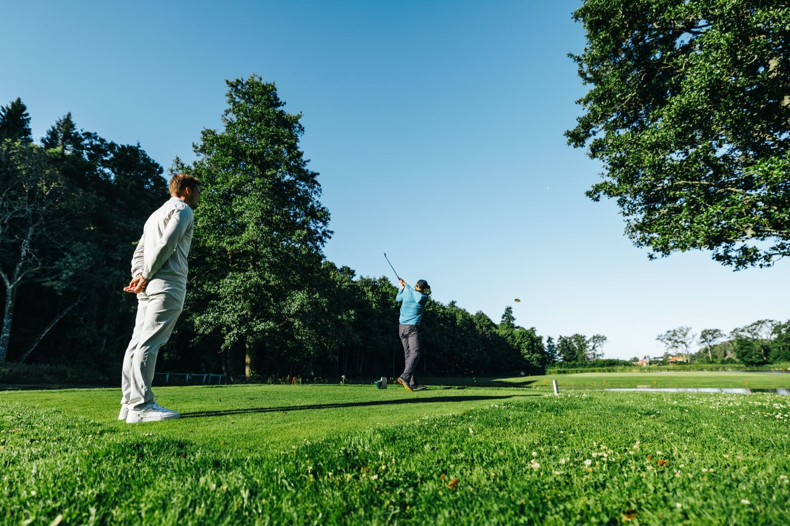

Sesong 2026 · Kategori C
Stats

Snittscore
Alle runder73,11,5 bedre enn 2025
Siste 5 runder: 72,0. Snitt under 72 gir Kategori B.
Snitt siste 5 runderHver runde
Brutto · 18 tellende runder · 12. april–4. oktober · GolfBox og egne registreringer
Strokes Gained
Per område−1,10,4 bedre siden juli
Slag per runde mot Kategori B. Estimat
Utslag OTT+0,2
Innspill APP−0,9
Nærspill ARGForeløpig−0,4
Putting PUTTForeløpig0,0
Innspill taper mest: 0,9 slag per runde, mest fra 100–150 m. Dagens økt kl. 15:30 trener dette.
12 runder slag for slag · 2. juni–4. oktober · nærspill og putting er sikre fra 24 runder
Trening
Til Plan48t 10 min92 % av plan
Siste 4 uker, av 52 t 20 min planlagt.
FYS 9 tTEK 11 tSLAG 16 t 55 minSPILL 7 t 30 minTURN 3 t 45 min
Gjennomført tid · uke 37–40 · 7. sep.–4. okt.
Tester
Alle testerClub SpeedPersonlig rekord108,4mph+1,9 siden juli · 28. sep. · TrackMan · Kontrollert
Markløft trapbar21. sep. · Egenført
140 kg+10 kg siden juli
Lengdehopp21. sep. · Kontrollert
2,48 m+0,06 m siden juli
Rotasjonskast21. sep. · Egenført
11,2 mFørste måling
Testbatteri AK Golf · neste fysiske test i uke 43